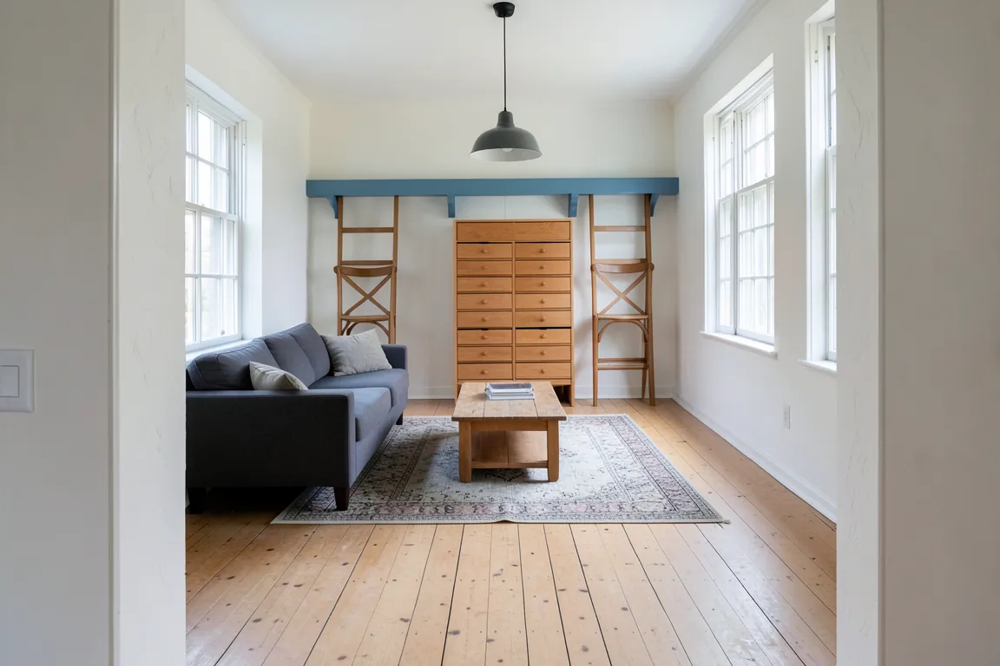

интерьер · 1820s–1860s · также: Шейкерский стиль, Простой шейкерский стиль
Комнаты Объединённого общества верующих во Второе пришествие Христа в Новой Англии, Нью-Йорке и Кентукки. Встроенное хранение, рейка с колышками вокруг стен, светлая деревянная мебель и голый пол дают комнату, упорядоченную для работы и лёгкую в уборке.

Главная идея
Комната прекрасна, когда каждая вещь в ней полезна, хорошо сделана и стоит на месте.
Принципы дизайна
Встраивайте хранение в стену: один шкаф с ящиками и дверцами от пола до потолка на одной стене, без отдельно стоящих комодов.
Пустите по комнате рейку с колышками на 180–190 см от пола, с точёным колышком каждые 30 см, и вешайте на неё стулья, одежду и инструменты.
Ставьте двери, окна и пары мебели зеркальными парами относительно центральной линии комнаты.
Оставляйте голыми 70–80% пола, чтобы пол было легко подметать.
Берите одну породу дерева и один цвет краски для всей столярки в комнате.
Делайте каждый ящик в шкафу на 10–15% выше ящика над ним.
Держите каждую вещь лёгкой: стул с лестничной спинкой весит 4–5 кг, и один человек поднимет его на рейку.
Антипаттерны
Резной, золочёный или фанерованный орнамент на мебели или отделке
Развешанные картины, зеркала в рамах или полки с украшениями
Печатные обои или узорчатая обивка
Тяжёлые мягкие диваны и кресла, остающиеся на полу
Мебель, поставленная под углом к стенам
Больше одного акцентного цвета краски в одной комнате